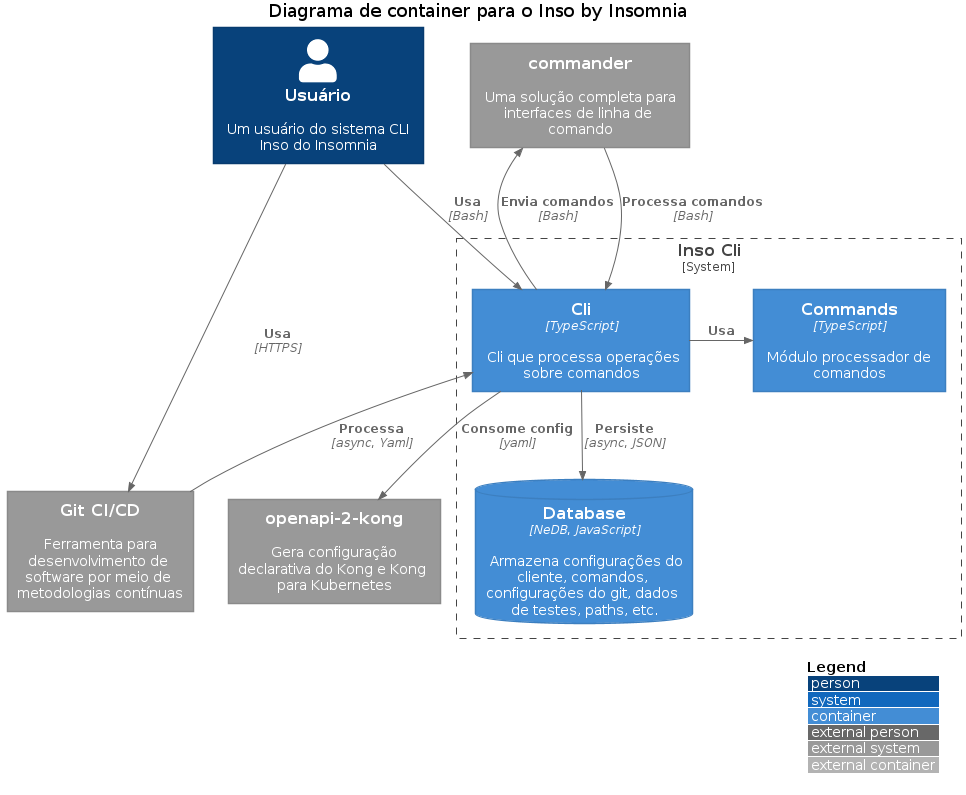

Documentação arquitetural para a plataforma insomnia-inso
Autor
Este documento foi produzido por Dacio Silva Bezerra.
- Matrícula: 118210572
- Contato: dacio.bezerra@ccc.ufcg.edu.br
- Projeto documentado: https://github.com/Kong/insomnia/blob/develop/packages/insomnia-inso
Descrição Arquitetural - Inso(CLI) by Insomnia
Este documento descreve a arquitetura da plataforma insomnia-cli. Esta descrição foi baseada principalmente no modelo C4.
Há de se notar que esta representação da arquitetura do projeto supracitado, engloba um módulo - o módulo de CLI - específico da aplicação de integração CI/CD, chamado de insomnia-inso que se trata do main da aplicação CLI utilizando o TypeScript.
Descrição Geral sobre o Inso(CLI) by Insomnia
A aplicação tem por objetivo implantação e publicação de especificações com confiança garantir que elas sejam válidas durante a fase de teste e implantação de um pipeline de CI / CD.
Facilita o teste ou a implantação de produção gerando a configuração Kong Declarative ou Kong For Kubernetes com plug-ins diretamente das especificações OpenAPI em qualquer lugar em um pipeline de CI / CD.
Objetivo Geral
Acelerar o deploy de APIs e suas principais funcionalidades.
Objetivos Específicos
Integrar facilmente com provedores Git como Github, Gitlab e Bitbucket para construir pipelines de API CI / CD personalizados que funcionam com os fluxos de trabalho existentes.
Contexto
Abaixo, é possível observar o diagrama de contexto do sistema. Nele temos um usuário que pode interagir com o Inso (a aplicação de automação de pipeline CI/CD para APIs) seja em sua máquina utilizando-o diretamente como forma de automatizar seu fluxo localmente, ou da forma mais comum, a qual seria a interação pelo gitlab, por exemplo, por meio da ferramenta de configuração de pipeline do Git. Essa ferramenta processaria todo o ferramental provido pelo Inso possibilitando ao usuário, a criação de seu pipeline personalizado para sua API. O Inso utiliza um commander, um módulo externo que disponibiliza para ele toda a base de interpretação de linha de comando. Além disso, o Inso exporta consigurações, para kubernetes, por exemplo. Para tal, ele utiliza o openapi-2-kong que faz todo o “trabalho sujo” pra ele no que diz respeito a essa task.

Containers
Abaixo, observamos o diagrama de container para a plataforma insomnia-inso:

Vamos detalhar cada container e seu papel dentro do sistema:
- Cli: Este seria o nosso principal container. Ele processa os comando pré-processados pelo commander, utiliza outro módulo importante da aplicação que seriam o Commands para realizar o comando em questão. A ferramenta do Git pode utilizar sua exportação de configurações para realizar o pipeline CI/CD bem como o usuário pode utilizá-lo diretamente/localmente. O Cli também é responsável por persistir informações relevantes num banco de dados in-memory.
- Commands: Responsável pelo processamento e validação individual dos comandos. Por exemplo, em um contexto de comando de teste, este módulo recebe as opções, valida as opções, roda os testes, encontra suites, gera relatório e devolve tudo para o Cli.
- Database: Armazena informações relevantes dos pipelines utilizados no disco, localmente e para uso futuro ou log.
Componentes
Abaixo, é possível observar o diagrama de componentes do sistema:

Extraindo os componentes do container Cli, temos:
- Git Component: Módulo responsável por receber requisições do Git e chamar o componente Go para realizar os passos necessários.
- Inso generate-config: Componente responsável por gerar configuração utilizando o openapi-kong.
- Inso lint: Componente responsável por executar ações referente ao lint de código da API. Assim como a maioria dos componentes, utiliza o container Commands para processamento.
- Inso test: Componente responsável por executar e produzir relatórios sobre os testes da API.
- Inso export: Esse componente extrai e exporta as informações geradas no Inso generate-config. As configurações ficam guardadas no Database, o componente Go recebe a requisição e repassa para o Inso export para ele gerar um exportável a partir das informações de configuração.
- Go: Componente mais importante da stack. Ele compila todas as requisições e então redireciona para seus devidos responsáveis. Recebe as respostas de volta e recompila todas as respostas, processa tudo em batch e retorna para o cliente uma resposta.
Visão de informação
Neste exemplo de máquina de estados temos um exemplo bem simples de como funcionaria o fluxo em um pipeline no Inso-Cli. Não é nada de outro mundo.
Temos um fluxo simples no contexto de execução de um pipeline no Git CI/CD. Temos apenas dois comandos sendo executados: Lint e test. Após o Git iniciar o pipeline o documento gerado pelo componente do Git deve possibilitar, logo em seguida, o build do Node na máquina virtual, se essa instalação der erro, o pipeline encerra com erro. Após a instalação, o npm pode estar disponível e então o Lint pode ser executado, após o Lint ser executado o comando de Teste é executado. Se os testes falharem o pipeline encerra com falha, do contrário, o pipeline se encerra com sucesso.